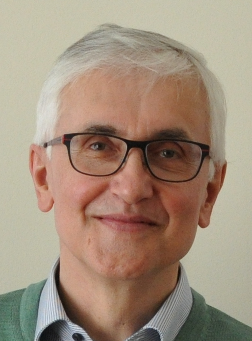

|
Achim Jung
Emeritus Professor of Computer Science
School of Computer Science
The University of Birmingham
Edgbaston
Birmingham, B15 2TT
United Kingdom
|
|
Email: A.Jung / bham.ac.uk
|
|  |
I am a member of the Birmingham Theory Group and my research interests include domain theory, denotational semantics of
programming languages, lambda calculus, topology, cryptography, and Computer Science education.
|
Events @ Birmingham
Talks @ Birmingham
Events further afield
See also
Research projects and visitors
- Marco Abbatini won an EU Marie Skłodowska-Curie Fellowship (funded by UKRI) to visit for two years from September 2023.
- Igor Arrieta won a four-year fellowship from the Basque Government and will visit from April 2023 for two years.
- Chong Shen won a scholarship from the China Postdoctorial Science Foundation and is visiting from the Beijing University of Posts and Telecomunications from December 2022 for one year.
- Computing with Infinite Data. Funded by EU (Horizon 2020, Marie Skłodowska-Curie Research and Innovation Staff Exchange, RISE), 2016-2023.
- Umberto Riviecchio won the EU Marie Skłodowska-Curie Fellowship D-frames meet bilattices and visited from 2011 to 2013.
- Coalgebraic Logic - Extending the Scope 2009-2012. Joint with Alexander Kurz. Funded by EPSRC.
Interested in getting involved? Find out more about the Theory Group at Birmingham.
|